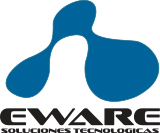

A fines de la década del 90, su socio mayoritario, ejerciendo labores como trabajador independiente detecta que en el mercado de las telecomunicaciones existe alta demanda para cubrir necesidades de software para empresas portadoras, ya que las soluciones que oferta la industria no cubren todas las exigencias o están desarrolladas en tecnologías obsoletas. Por lo anterior, usando su experiencia y conocimiento tecnológico decide producir la primera versión de Ecalls, uno de los principales productos en su inicio, el que en el corto plazo es adquirido por importantes empresas del rubro. Considerando el creciente aumento de las operaciones y uniendo espíritus emprendedores, funda sociedad con el nombre Tecnologías de Información Ecarrier Limitada, su objetivo principal es formalizar operaciones, diversificar los productos existentes y aumentar los potenciales clientes. En sus inicios es considerada como ejemplo para la defensa de tesis de Ingenieros Industriales de la Universidad Tecnológica Metropolitana (UTEM), la que es llamada “Aplicación de la Ingeniería Industrial en la Microempresa”, puesto que siendo una pequeña fábrica de soluciones, ya implementaba todos los elementos de administración de una gran empresa.
A mediados de la década del 2000, con el objetivo de brindar soluciones integrales, a sus productos de software agrega oferta de servicios de soporte, mantenimiento y explotación de sistemas, lo que implica realizar un importante proceso de captación de personal con experiencia en el rubro e inversión en tecnologías. Para atender la creciente demanda que experimenta la industria en la actualización de tecnologías Web Services, documentos XML y soluciones para firmas digitales, contrata especialistas del área y desarrolla soluciones modulares y escalables, orientadas a ser personalizadas en función de los requerimientos específicos de cada cliente. Finalmente, se contratan asesorías legales y consultorías corporativas para organizar las operaciones desde el punto de vista técnico y comercial, desarrollando un plan estratégico que han permitido continuar el crecimiento sin mermar la calidad del servicio.
 A fines de la misma década, inicia importante proceso de diversificación, amplía a operadores VoIP desarrollando renovación tecnológica de sus productos basada en Open Source y licenciamiento GPL; y a operadores móviles implementando nuevos servicios dirigidos soportar la continuidad operacional de los procesos tecnológicos más críticos de cada cliente. En la actualidad opera bajo el nombre EWARE SOLUCIONES TECNOLÓGICAS, la que es reconocida como una alternativa de solución de software y servicios a las grandes empresas, sus marcas ePTE, Fac2rando e Ecalls, han logrado importante posición de mercado, está desarrollando proyectos de innovación tecnológica para actualizar sus soluciones y continuar diversificando, exporta software, mantiene negocios B2B de servicios de desarrollo, explotación y soporte con importantes empresas y está en constante proceso de mejora continua, pues reconoce que la implantación de sistemas de gestión de calidad y normas de certificación son las herramientas que necesita una empresa en crecimiento, para proveer servicios de alta calidad y adaptarse en forma oportuna a los cambios que demandan sus clientes.